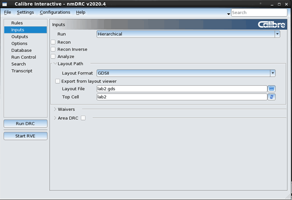

Calibre Interactive GUI Reference
In most cases the name of the GUI control corresponds to an SVRF command or command option. Tooltips provide additional information. Choose to hide and show pages. Some pages have a shortcut, or hotkey, for going to the page; this is indicated in parentheses.

GUI Item |
Description |
|---|---|
Rules Page (Alt+r / Alt+R) |
Specify the rule file and the run directory on the Rules page. Click the To specify additional rule files, click Options on the left panel, select “Include Rules Files,” and expand the control area to specify the additional rule files. The Rules page includes the Layer Derivations Tree. |
Inputs Page (Alt+i / Alt+I) |
Specify the input layout, schematic source (if used), and other input files. To specify additional layout or schematic input files, click Database on the left panel and expand the Library area. The Inputs page also specifies the run type for most applications. |
Outputs Page (Alt+o / Alt+O) |
Specify parameters related to the output of the run. |
Options Page (Alt+p / Alt+P) |
Specify options related to the application. Some options are common to all applications. |
Application-specific pages |
Specify additional application-specific options. The visibility of these additional pages is often dependent on other settings in the GUI. |
Waivers page |
Specify options for a waiver run or waiver creation. See “Calibre Auto-Waivers in Calibre Interactive”. |
Specify the Resolution and Precision statements, and additional layout and schematic input files. |
|
Specify database conversion options for third party databases. The page is only displayed if “Layout Format” on the Inputs page is OPENACCESS or LEFDEF. See “Providing OpenAccess Input with Calibre Interactive” and “Providing LEF/DEF Input with Calibre Interactive”. |
|
View and specify environment variables for the run. |
|
V2LVS Page |
Specify options for the v2lvs translator, which translates VERILOG format source input to SPICE format. The V2LVS page is available when VERILOG or MIXED is selected as the “Source Format” on the Inputs page. This page is similar to the Setup Verilog Translator dialog box in classic Calibre Interactive nmLVS—see “Setting Up the Verilog Translator (v2lvs)” in the Calibre Interactive User’s Manual. |
Specify the run mode, processor information, options for invoking Calibre RVE, other run-related options. The page includes settings for connecting to a design tool. |
|
Specify trigger functions that execute before and after the run. |
|
Specify settings for file-naming templates. |
|
Specify settings for loading and saving the runset, saving the transcript, and loading a custom configuration file. The miscellaneous (Misc) preferences section controls warnings, prompts, automatic behaviors, and other options. |
|
|
(Ctrl+f / Ctrl+F) |
Search the GUI for a specified string. |
Transcript Page (Alt+t / Alt+T) |
View the transcript of the run. Errors and warnings are listed in the bottom portion of the page. Enter Ctrl-f to open a search bar. |
Run app button (Alt+d / Alt+D) |
Starts the Calibre run. To view the Calibre Interactive control file, click the Run app button while pressing the Ctrl key. |
Start RVE button |
Open Calibre RVE and load the results database specified on the Outputs page. |
Errors and warnings are indicated as follows:
|
A missing or incorrect setting. Hover over the icon for a message about the error. A red exclamation point (!) is also displayed by the page name if any settings have an error. |
|
A warning, such as for a setting that conflicts with another option setting. The run can proceed with warnings. Hover over the icon for a message about the warning. The warning icon is not displayed next to the page name. |
See these topics for information on application-specific pages: